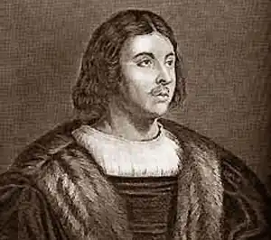

Джованні Боккаччо був одним з найвідоміших учених-гуманістів свого часу. Його батько був багатим і впливовим флорентійським комерсантом і вів торгові справи навіть у Франції. Батько Боккаччо сподівався зробити з сина свого спадкоємця і готував його до комерційної діяльності.
У1330 році він прямує у справах фірми до Неаполя. Але він не відчуває ніякої схильності до комерції, обтяжується дрібною опікою користолюбного і скупого батька. Тому вирішує ні лишитися назавжди в Неаполі і вчитися там канонічного права, тобто стати юристом — фахівцем з релігійних і церковних справ.
Якщо у Флоренції хлопець знав тільки жадібних торговців, банкірів або безпринципних, спритних політиків, то тут, в Неаполі, він потрапив у середовище учених-гуманістів і поетів. Його запросив до і мого двору місцевий король — Роберт Анжуйський, який сам писав вірші і протежував мистецтвам. Особливо він любив поезію і наблизив до себе самого Франческо Петрарку (1304-1374) — "короля" італійської поезії, коронованого лавровим вінком у Римі на Капітолії за звичаєм поетів старовини. Петрарка мав величезний вплив на Боккаччо, став його найближчим другом на все життя і ввів у коло придворних поетів та вчених, які оточували старого неаполітанського короля. Зароки перебування в Неаполі (1330-1340) майбутній автор "Декамерона" дістає добру освіту, опановує грецьку і латинську мови,починає писати вірші і одночасно вчені трактати (латинською мовою).12 квітня 1338 року в церкві Св. Лаврентія він побачив молоду жінку — графиню Марію Аквіно. Вона стала великою любов'ю всього Його життя. Але Марія була заміжня, тому їх любов була складною, болісною, що відобразилося в поезії Боккаччо. У1340 році батько вимагає його повернення у Флоренцію. Боккаччо покидає Неаполь на цілих п'ять років. За роки розлуки і страждань він створює значні, глибокі поеми про кохання у дусі античних пасторалей, пройняті живим щирим відчуттям. З них найбільш відомі "Ф'єзоланські німфи" — (1343), а також невеликий прозаїчний твір "Ф'ямметта" (1343). Це фактично перший досвід психологічного роману в Європі, що привертає і сьогодні силою та інтенсивністю зображених в ньому відчуттів жінки, що сумує через розлуку зі своїм коханим, який її щойно покинув. (Якоюсь мірою в "Ф'ямметті" була відображена історія любові автора і Марії Аквіно.) У1345 році письменнику вдалося повернутися до Неаполя. До цього другого приїзду в улюблене місто він став вже знаменитим письменником, а також визнаним ученим-гуманістом і авторитетним юристом-каноніком. До його послуг вдаються головні діячі церкви, у тому числі і її глава — римський папа, який регулярно доручає Боккаччо складні дипломатичні і юридичні місії. У Неаполі вже немає Роберта Анжуйського. Престол успадкувала його онучка — молода Іоанна Неаполітанська, жінка темпераментна, схильна до веселого, яскравого життя. При її дворі тепер рідко звучали вірші і не велися більше вчені диспути. Зате було шумно від балів, свят і карнавалів. Джованні Боккаччо почувався чужим у цьому оточенні. Його відштовхували неробство і відверта схильність до розпусти й інтриг, характерна для оточення легковажної королеви. Але в той же час він цінував її живу вдачу, її безпосередність і ту атмосферу невимушеної веселості, яка постійно панувала при її дворі, позбавленому манірного лицемірства палаців католицьких правителів. Письменник не брав участі у галасливих розвагах і тим більше в оргіях придворних. Він був для цього дуже серйозним, та й до того ж рано поповнів від сидячої роботи. Але Іонна Неаполітанська та її наближені любили Боккаччо і захоплювалися його талантом. їх привертав перш за все його надзвичайний дар розповідача. Вони могли слухати його годинами. Пізніше він напише, що ідею "Декамерона" йому підказала неаполітанська королева, полонена майстерністю, з якою він потішав її та її друзів своїми усними розповідями. Але справжнім поштовхом до написання Боккаччо "Декамерона" стала жахлива, не бачена ні до, ні після епідемія чуми 1348 року. Вона пройшла по всіх країнах Західної Європи, скосила не меншеполовини населення. Боккаччо, який перебував у цей час в Неаполі, чудом уцілів, але втратив безліч рідних і близьких, зокрема батька і молоду мачуху. Йому довелося знову повертатися у Флоренцію, займатися справами фірми яка дуже занепала, і поклопотатися про маленького брата, що зали шився сиротою. Він їде у маєток, залишений йому батьком, і постійно живе там до самої смерті, лише виїжджаючи час від часу в різні міста і країни для виконання окремих дипломатичних доручень римського папи, який довіряв йому навіть секретні місії. Весь вільний час Боккаччо віддає літературним і науковим працям. Живе він самотньо, без сім'ї. Після смерті Марії Аквіно він не знайшов жінки, гідної його любові.Дещо заспокоївшись після потрясінь, спричинених епідемією чуми 1348 року, він в 1350 році починає роботу над "Декамероном" і публікує його в 1353 році. Цей твір приніс йому світову славу і закріпив у століттях його ім'я.Написаний прекрасною італійською мовою, він став еталоном літературної мови; "генієм італійської прози" нарікали Боккаччо його співвітчизники. "Декамерон" Головним твором Джованні Боккаччо, що увічнив його ім'я, був прославлений і ославлений "Декамерон" (10-денні розповіді) — збірка 100 повістей, розказаних товариством із семи жінок і трьох чоловіків, які під час чуми переселилися в село і там забавлялися цими розповідями. "Декамерон" написаний частково в Неаполі, частково у Флоренції, зміст його Боккаччо черпав або з давньофранцузьких "Fabliaux", а також із сучасних поетові подій. Розповіді висловлені витонченою, легкою мовою, насиченою багатством слів і виразів, і дихають життєвою правдою і різноманітністю. В них зображені люди різного віку і характеру, найрізноманітніші пригоди, починаючи з найвеселіших і смішніших і завершуючи найтрагічнішими і зворушливими. "Декамерон" перекладений майже всіма мовами, з нього черпали натхнення багато письменників, і більше за всіх Шекспір.Назва "Декамерон" означає в перекладі з грецької "десятиденник", оскільки він містить новели, які протягом десяти днів розказують одне одному ті, що втекли від чуми з Флоренції на заміську багату віллу. Кожен розповідає по одній історії в день. За десять днів набирається в цілому сто розповідей, які і складають цю книгу. Але важливі не тільки самі ці новели, але також і їх сюжетне обрамлення. Відкривається "Декамерон" вражаючим описом чуми, що лютує у Флоренції. Побачивши загибель тисяч людей і жахливий хаос, що запанував в місті, Боккаччо з гіркотою пише: "Ореол, що осявав закони божі і людські, згаснув..." Зіткнення з такою страшною бідою, із смертю загострило бажання жити, викликало прагнення не дати згаснути "ореолу" біля тих, у кого він ще зберігся. Тому розповідачі "Декамерона" хочуть радіти життю і насолоджуватися прекрасною природою. В епізодах, що увійшли до "рамки", в яку обрамлені новели збірки, представлений ніби "світлий оазис" в "кривавій пустелі": гарні, натхненні молоді люди, зайняті танцями, музикою, співом, витонченою трапезою і цікавою бесідою, під час якої і розповідаються новели збірки. Це обрамлення — не технічний прийом введення художнього матеріалу, а текст, що має глибокий сенс. Це і є те, що стали потім називати "бенкетом під час чуми", тобто таке становище, коли вдаються до радості і веселощів не від хорошого життя, а швидше для того, щоб забутися. Загроза, яка нависла над людськими цінностями, спонукала автора з особливою увагою вдивлятися в таке крихке життя, розібратися в ньому, уявивши як його привабливі, прекрасні сторони, так і те, що в ньому потворно і огидно. У багатьох розповідях "Декамерона" прославляється любов, показана її могутність, що додає людям наснаги в ім'я неї творити чудеса. Всупереч віковим середньовічним уявленням, любов для Боккаччо — не гріх, не вимушена необхідність, що забезпечує продовження людського роду, а велике чудо, величезна радість. У його розповідях вона виступає в різних обличчях — то плотська насолода, то глибока відданість і вірність, то повна самовідданість. Щоб її добитися, люди не тільки йдуть на жертви, але і проявляють багато хитрощів і винахідливості. Автор прославляє цю здібність людини до заповзятливості, до ініціативності, до хитромудрої вигадки заради досягнення своєї мети. В його новелах розказано немало історій, в яких яскраво висвітлюється і дотепність, і веселість, і щедрість, і широта натури людей. З розповідей Боккаччо абсолютно очевидно, що для нього людина і її душевні особливості важливіші за становище цієї людини в суспільстві. Він розбивав міцне середньовічне уявлення про те. що значущість окремого індивіда визначається не його особистими якостями, а його місцем в соціальній ієрархії. "Декамерон" розвінчував також і духівництво, оголяючи приховані вади, до яких вдавалися служителі церкви. Є в книзі немало новел про користолюбство, про скупість і розпусту ченців і священиків. Ці розповіді мали особливо великий успіх. Письменник використовує немало фольклорних мотивів, а також тематику народних притч і фабліо, де діяли і спритні шахраї, і жадібні ченці. Увійшли до його книги і деякі сюжети, що запозичені у стародавніх авторів. Цікаво відзначити, що до "Декамерона" були також включені і художньо перероблені приклади, якими священнослужителі рясно насичували свої проповіді, звернені до народу. Під пером Боккаччо ці повчальні історії перетворювалися на захоплюючі і яскраві твори — і прославлявся в них вже не Бог, а Людина. Звичайно, церква засудила "Декамерон". Автор у старості відрікся від цього твору як від помилки молодості. Книга була оголошена аморальною і неодноразово заборонялася. Особливе обурення викликали окремі новели, які здавалися занадто фривольними. Але в них немає смакування натуралістичними, фізіологічними подробицями, а передано у витонченій формі відчуття радості буття, захоплення людською земною насолодою у дусі античних авторів на противагу святенницькому релігійному аскетизму. "Декамерон" Боккаччо ніби підбиває підсумок цілої епохи, завершує собою величезний період середньовічної культури і відкриває літературу Нового часу.